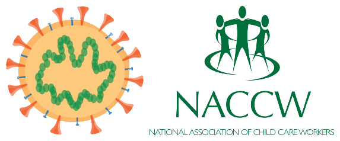

Most of the questions will be based the statements addressed by the President on the escalation of measures to combat COVID-19 epidemic.
1. What is the government going to do to ensure that hospitals are not overwhelmed?
Answer:To ensure that hospitals are not overwhelmed, a system will be put in place for ‘centralised patient management’ for severe cases and ‘decentralised primary care’ for mild cases
2. How will the government support the informal settlements and rural communities without reliable water sources?
Answer:Provisions of emergency water supplies will be made– using water storage tanks, water tankers, boreholes and communal standpipes.
3. What fund is set up and focuses on efforts to combat the spread of the virus, helping to track the spread, care for those who are ill and support those whose lives are disrupted?
Answer: Solidarity Fund
4. Who can contribute to this fund?
Answer:All mentioned
5. Who is the chairperson and the deputy chairperson of the fund?
Answer:Chairperson is Ms Gloria Serobe and deputy chairperson is Mr Adrian Enthoven
6. The Fund will be administered by a reputable team of people, which sectors/work areas are these people from ?
Answer:Financial institutions, accounting firms and the government
7. How will the general public know about the contributions made into the Fund?
Answer:The team will fully account for every cent contributed and will publish the details on the website
8. What has the government done to ensure that there is no need for stockpiling when shopping for any items in stores?
AnswerGovernment has had discussions with manufacturers and distributors of basic necessities, who have indicated that there will be a continuous supply of these goods
9. How is the government going to alleviate congestion at payment points during the times of recieving grant?
AnswerOld age pensions and disability grants will be available for collection from 30 and 31 March 2020, while other categories of grants will be available for collection from 01 April 2020
10. Which channels for accessing grant will remain open during this national lock-down to help social grant recipient?
Answer:All mentioned